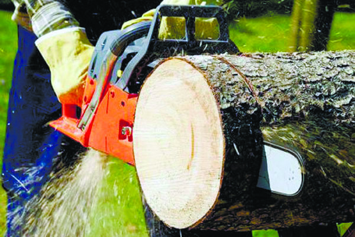

Після набуття чинності Законом України «Про охорону праці» Кабінет Міністрів прийняв рішення про заснування друкованого засобу масової інформації у сфері охорони праці, основним завданням якого передбачався моніторинг виконання в Україні законодавства про охорону праці, поширення ідеології щодо впровадження безпечних умов праці, популяризація позитивного досвіду роботи у сфері охорони праці, формування в суспільстві працеохоронної культури.
Ініціаторами створення журналу були тодішні Голова Держнаглядохоронпраці Станіслав Ткачук та начальник головного управління охорони праці Комітету Едуард Теличко. За підтримки С. Ткачука було виділено кошти на придбання будівлі редакції, реконструйовано та відремонтовано приміщення, змонтовано обладнання поліграфічної дільниці. е Велику допомогу новому виданню в той час надали колишні працівники Держнаглядохоронпраці Л. Борецька, Г. Лесенко, О. Цибульник та інші. Перший номер журналу вийшов у світ у липні 1994 року. З цього місяця бере свій початок історичний літопис видання, а 1 липня ДП «Редакція журналу «Охорона праці» вважає своїм днем народження.
Після набуття чинності Законом України «Про охорону праці» Кабінет Міністрів прийняв рішення про заснування друкованого засобу масової інформації у сфері охорони праці, основним завданням якого передбачався моніторинг виконання в Україні законодавства про охорону праці, поширення ідеології щодо впровадження безпечних умов праці, популяризація позитивного досвіду роботи у сфері охорони праці, формування в суспільстві працеохоронної культури.
Ініціаторами створення журналу були тодішні Голова Держнаглядохоронпраці Станіслав Ткачук та начальник головного управління охорони праці Комітету Едуард Теличко. За підтримки С. Ткачука було виділено кошти на придбання будівлі редакції, реконструйовано та відремонтовано приміщення, змонтовано обладнання поліграфічної дільниці. Редакційний колектив очолив журналіст Микола Яковенко. Активну участь у процесі створення журналу брав також Е. Теличко.
Ініціаторами створення журналу були тодішні Голова Держнаглядохоронпраці Станіслав Ткачук та начальник головного управління охорони праці Комітету Едуард Теличко. За підтримки С. Ткачука було виділено кошти на придбання будівлі редакції, реконструйовано та відремонтовано приміщення, змонтовано обладнання поліграфічної дільниці. Редакційний колектив очолив журналіст Микола Яковенко. Активну участь у процесі створення журналу брав також Е. Теличко.
За його безпосередньої участі журнал проходив етапи становлення, підбирався авторський колектив. Велику допомогу новому виданню в той час надали колишні працівники Держнаглядохоронпраці Л. Борецька, Г. Лесенко, О. Цибульник та інші. Перший номер журналу вийшов у світ у липні 1994 року. З цього місяця бере свій початок історичний літопис видання, а 1 липня ДП «Редакція журналу «Охорона праці» вважає своїм днем народження.
“Редакційний колектив очолив журналіст Микола Яковенко. Активну участь у процесі створення журналу брав також Е. Теличко. За його безпосередньої участі журнал проходив етапи становлення, підбирався авторський колектив.”
Подзаголовок
За його безпосередньої участі журнал проходив етапи становлення, підбирався авторський колектив. Велику допомогу новому виданню в той час надали колишні працівники Держнаглядохоронпраці Л. Борецька, Г. Лесенко, О. Цибульник та інші. Перший номер журналу вийшов у світ у липні 1994 року. З цього місяця бере свій початок історичний літопис видання, а 1 липня ДП «Редакція журналу «Охорона праці» вважає своїм днем народження.

Після набуття чинності Законом України «Про охорону праці» Кабінет Міністрів прийняв рішення про заснування друкованого засобу масової інформації у сфері охорони праці, основним завданням якого передбачався моніторинг виконання в Україні законодавства про охорону праці, поширення ідеології щодо впровадження безпечних умов праці, популяризація позитивного досвіду роботи у сфері охорони праці, формування в суспільстві працеохоронної культури.
Ініціаторами створення журналу були тодішні Голова Держнаглядохоронпраці Станіслав Ткачук та начальник головного управління охорони праці Комітету Едуард Теличко. За підтримки С. Ткачука було виділено кошти на придбання будівлі редакції, реконструйовано та відремонтовано приміщення, змонтовано обладнання поліграфічної дільниці. Редакційний колектив очолив журналіст Микола Яковенко. Активну участь у процесі створення журналу брав також Е. Теличко.
Ініціаторами створення журналу були тодішні Голова Держнаглядохоронпраці Станіслав Ткачук та начальник головного управління охорони праці Комітету Едуард Теличко. За підтримки С. Ткачука було виділено кошти на придбання будівлі редакції, реконструйовано та відремонтовано приміщення, змонтовано обладнання поліграфічної дільниці. Редакційний колектив очолив журналіст Микола Яковенко. Активну участь у процесі створення журналу брав також Е. Теличко.
Після набуття чинності Законом України «Про охорону праці» Кабінет Міністрів прийняв рішення про заснування друкованого засобу масової інформації у сфері охорони праці, основним завданням якого передбачався моніторинг виконання в Україні законодавства про охорону праці, поширення ідеології щодо впровадження безпечних умов праці, популяризація позитивного досвіду роботи у сфері охорони праці, формування в суспільстві працеохоронної культури.
Ініціаторами створення журналу були тодішні Голова Держнаглядохоронпраці Станіслав Ткачук та начальник головного управління охорони праці Комітету Едуард Теличко. За підтримки С. Ткачука було виділено кошти на придбання будівлі редакції, реконструйовано та відремонтовано приміщення, змонтовано обладнання поліграфічної дільниці. е Велику допомогу новому виданню в той час надали колишні працівники Держнаглядохоронпраці Л. Борецька, Г. Лесенко, О. Цибульник та інші. Перший номер журналу вийшов у світ у липні 1994 року. З цього місяця бере свій початок історичний літопис видання, а 1 липня ДП «Редакція журналу «Охорона праці» вважає своїм днем народження.
Ініціаторами створення журналу були тодішні Голова Держнаглядохоронпраці Станіслав Ткачук та начальник головного управління охорони праці Комітету Едуард Теличко. За підтримки С. Ткачука було виділено кошти на придбання будівлі редакції, реконструйовано та відремонтовано приміщення, змонтовано обладнання поліграфічної дільниці. е Велику допомогу новому виданню в той час надали колишні працівники Держнаглядохоронпраці Л. Борецька, Г. Лесенко, О. Цибульник та інші. Перший номер журналу вийшов у світ у липні 1994 року. З цього місяця бере свій початок історичний літопис видання, а 1 липня ДП «Редакція журналу «Охорона праці» вважає своїм днем народження.
На сторінках видання, затребуваної спеціалістами з охорони праці, інженерами підприємств, публікуються статті про:
захист трудових прав працівників,
наглядову та сервісну діяльність Державної служби України з питань праці,
проблеми соціального захисту осіб, потерпілих на виробництві,
соціальне забезпечення/реабілітацію інвалідів праці,
діяльність організацій інвалідів, діяльність Фонду соціального страхування України,
профілактику виробничого травматизму та професійних захворювань,
нормативне регулювання питань охорони та гігієни праці,
питання реабілітації учасників АТО тощо.
Журнал є організатором Міжнародної конференції з охорони праці, яка проводиться в Україні вже вісім років поспіль, а також семінарів та тренінгів з актуальних для сфери безпеки та гігієни праці питань.
Проте важливо не тільки знайти свого читача, але й утримувати його. Над цим ми успішно працюємо протягом двох десятиріч: постійно відвідуємо підприємства, відслідковуємо новини законодавства у сфері охорони праці та промислової безпеки, висвітлюємо роботу Державної служби з питань праці та інших працеохоронних інститутів – одним словом, тримаємо руку на пульсі потреб фахівців з охорони праці. Мені дуже приємно представити на сторінках цього буклету наш колектив. Сподіваюсь, знайомство буде цікавим та корисним. Обирайте журнал «Охорона праці»!
Головний редактор
Дмитро Матвійчук